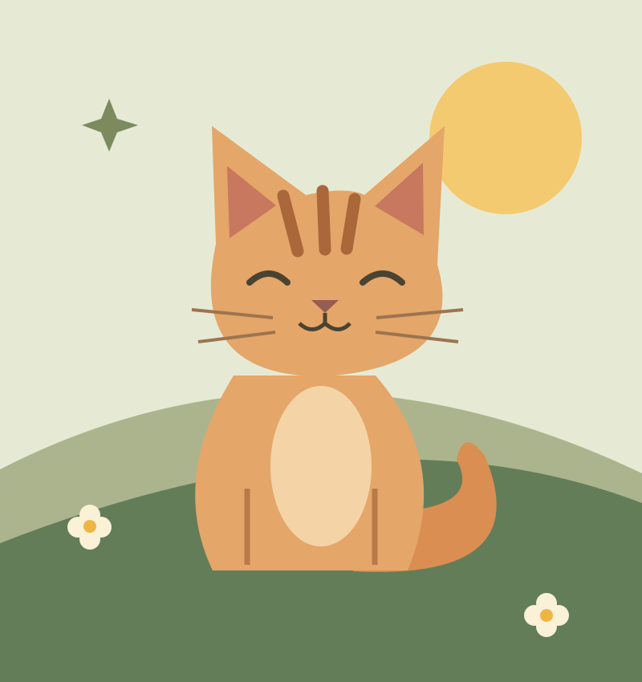
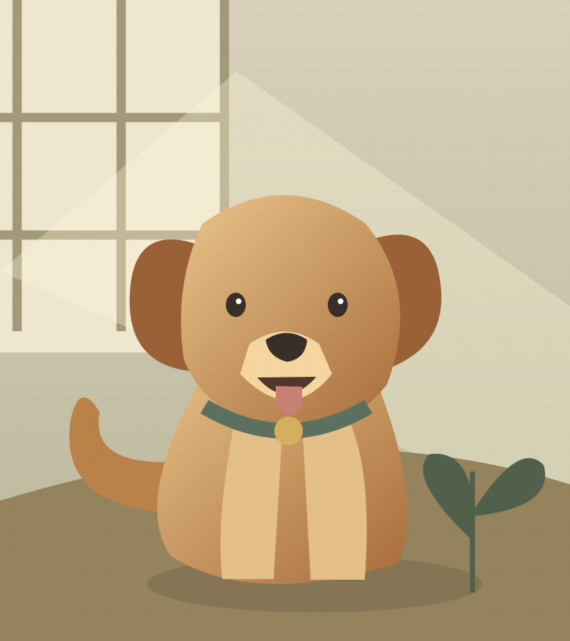

挑一张喜欢的照片
是不是那张有点模糊、
却一看就会笑的照片？

今天的任务：晒太阳，和被喜欢。
不用准备得很完整。
从你现在想起的那一件事开始就好。
是不是那张有点模糊、
却一看就会笑的照片？
TA 最喜欢谁，最爱什么，
最擅长用什么方式撒娇。
每个人的一句话，
让这座花园再热闹一点。

晴天的时候，小麦总是第一个起床。
来自花园的一页 / 演示故事
喜欢草地，喜欢球，喜欢每一次出门。
最喜欢的，还是陪着你。
先免费试试，喜欢了再多种几朵花。
价格与空间，清清楚楚。
SOME GENTLE ANSWERS / 你可能想知道
当然。先放一张照片也很好，你可以按照自己的节奏慢慢整理。
由你决定。正式产品提供仅自己可见、持链接访问、口令访问和公开四种范围。
付费用于增加媒体与时间线容量，并提供约定年限的托管。亲友查看与留言不收费。本页为静态设计演示，不提供真实支付。
正式产品支持完整资料导出。你的照片、文字与时间线始终由你决定如何保存。